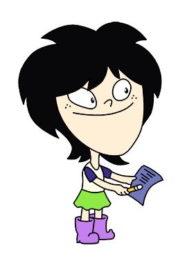
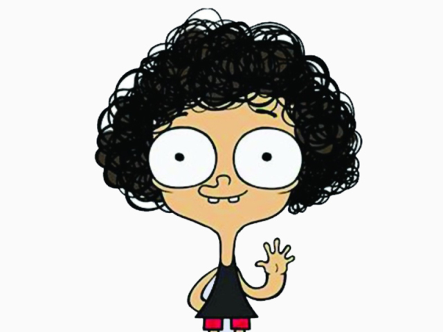
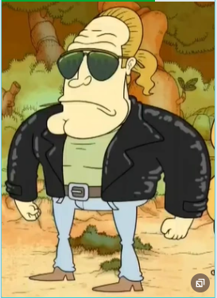

Encontre a receita perfeita!
Explore dezenas de variações das receitas favoritas entre os marombas ao redor do mundo!
Confira as últimas receitas
Dê uma olhada nas receitas mais curtidas
em alta 🔥
Capuccino
Extraordinário 4/4
Uma bebida ideal para os amantes de café, com um toque de whey.
 Rômulo Furtado
Rômulo Furtado
novo
Bolo de caneca
Extraordinário 4/4
Bolo de caneca com cobertura de calda de whey.

Lara
novo
Chips de batata doce
Extraordinário 4/4
Chips de batata doce preparados na airfryer.

Irmão do Jorel
novo
Frango brutal
Bom 3/4
Peito de frango preparado com temperos brutais.

Steve Magal